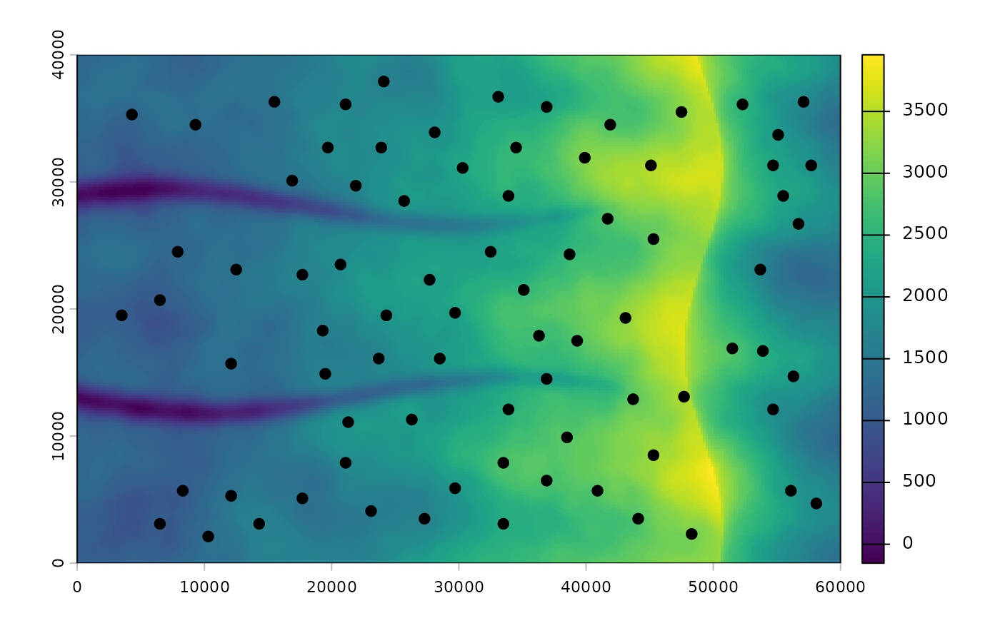

Loads the example shipped with the package: a simulated 60 x 40 km
mountain range modeled loosely on the central Sierra Nevada, with 80
snowmelt meadows in four lineages. A long, gradual western slope rises to a
crest near the eastern edge; east of it a steep escarpment lies in a rain
shadow; two steep-walled canyons cut the western slope. Migrants leave
water-stressed meadows for wetter neighbors. Under warming (+4.2 C)
snowpack shrinks by a share that falls with elevation, from about 90% in
the foothills to under 20% at the crest, so the push uphill grows most at
low elevation. The script that builds the example is in the package source
(data-raw/make_example.R).
Value
A list with
dem,resistanceElevation (m) and movement resistance
SpatRasters; ridgelines have resistance 1e6.env,env_futureEnvironmental layers now and under warming: snowpack (mm), runoff (mm), a meadow moisture index (log scale), summer temperature (C), slope (degrees) and forest cover (0-1).
sitesThe 80 meadows as
sfpoints withsite,elevationandlineage.lineage_tmrcaTime since each pair of lineages split (thousand years), for
lineage_cross().resistance_slope,resistance_coverThe two components blended 80:20 into
resistance, for comparing path hypotheses.accAccumulated cost surfaces for every meadow, from
accumulated_cost(). Only withacc = TRUE; they take a few seconds to compute and are cached for the rest of the session.filesPaths to the genotypes (about 1,300 SNPs, 8 individuals per meadow) in STRUCTURE (
structure), GENEPOP (genepop) and VCF (vcf) format, and the VCF population map (popmap).
Examples
ex <- corridor_example()
terra::plot(ex$dem)
plot(sf::st_geometry(ex$sites), add = TRUE, pch = 19)
